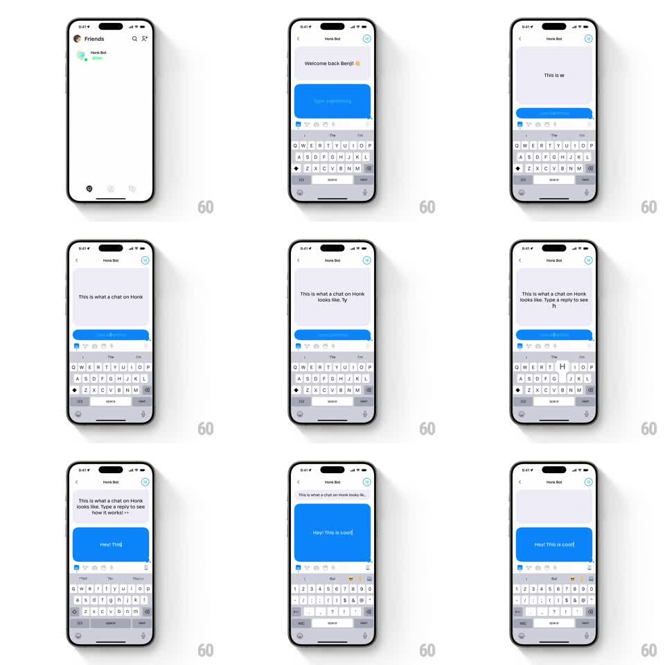

Media
Frame-by-frame

Rebuild this interaction 1:1: Honk's live chat bubble - as the user types, the blue bubble in the chat area resizes and morphs with spring physics to fit the text in real time, growing and shrinking with every keystroke.

Rebuild this interaction 1:1: Honk's live chat bubble - as the user types, the blue bubble in the chat area resizes and morphs with spring physics to fit the text in real time, growing and shrinking with every keystroke.
## Integration
Integration: stack-agnostic spec - springs given as stiffness/damping, timed motions as duration + curve; map every value to your framework and animation library of choice.
## Scene
Honk chat with "Honk Bot" ("Welcome back Benji!") and the keyboard open. A single live blue bubble sits in the message area. Text is typed character by character ("This is what a chat on Honk looks like. Type a reply to see how it works!"), and the bubble continuously reshapes around it - then the reply ("Hey! This is cool") is typed into a fresh bubble that grows the same way.
## Motion spec
Pattern: per-keystroke spring resize.
- Each typed character recomputes the bubble's target size; the bubble animates to it with a spring (stiffness ~380, damping ~22, underdamped so it visibly overshoots by a few points).
- Line wraps make the bubble jump taller and narrower - these discrete layout changes get the same spring treatment (width and height animate independently).
- Deleting characters shrinks the bubble with the identical spring - symmetric back-and-forth behavior.
- Text inside stays pinned top-left while the bubble's bounds breathe around it; no text reflow lag.
- The keyboard and toolbar stay fixed; only the bubble morphs.
## Calibration
- Overshoot is small (3-6pt) and settles fast - springy, not wobbly.
- Corner radius stays constant (20pt) at every size.
## Reduced motion
Resize with a 150ms ease-out instead of the spring; no overshoot.
## Don't miss
- The effect works in both directions - deleting must be as fluid as typing.
- The bubble never clips its text mid-animation; pad by 2pt during motion.